重启·创业之神
第一章：系统降临
2026年的深夜，一个创业者的意识
穿越回了2010年。
这一次，他带着未来的记忆，
和一个不太靠谱的系统。
↓ 向下滑动开始阅读 ↓
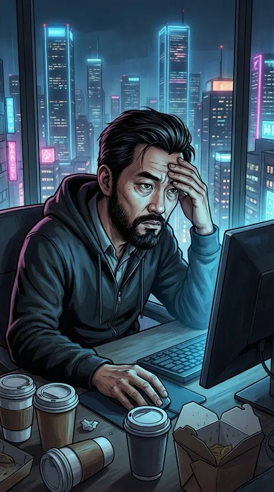
【特写 · 俯拍15° · 固定机位】深夜办公室
2026年，凌晨三点。上海，某AI公司总部。
搞了这么多年AI创业，怎么还是在写代码到凌晨三点……
屏幕的蓝光映在朱江疲惫的脸上，桌上的咖啡早就凉了。
【情绪：疲惫 · 但眼神中有不甘】
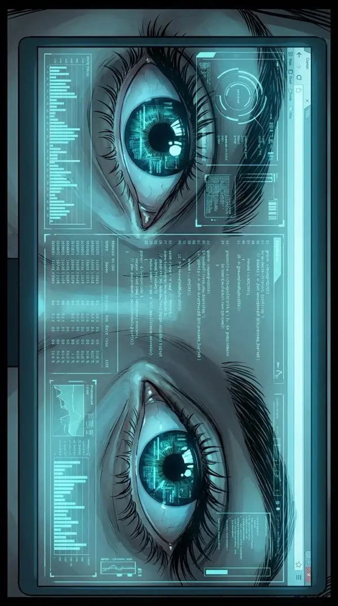
【极端特写 · 平拍 · 固定】电脑屏幕
Trinity V3系统的数据图表在屏幕上跳动。用户满意度曲线、内容生成指标、Loss值……
这些数字背后，到底是什么？是我十六年创业的全部答案吗？
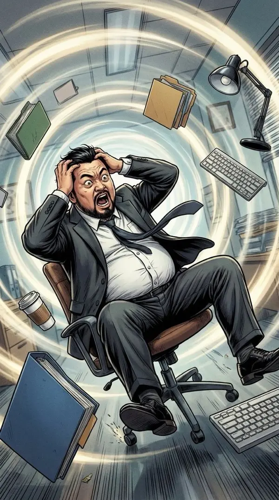
【中景 · 荷兰角倾斜 · 动感模糊】办公室
突然，一阵剧烈的头痛袭来——像是有什么东西要从脑子里撕裂出去。
"呃啊——！"
椅子猛然后仰，咖啡杯摔碎在地。眼前的一切开始扭曲、旋转……
【情绪：剧痛 · 失控 · 恐惧】
【全景 · 主观视角 · 高速推进】时空隧道
意识坠入无尽的光之隧道。2026……2020……2015……2010——
时间碎片在身边飞速掠过。每一片都是一段记忆，一个转折，一次选择。
如果……能重来一次……
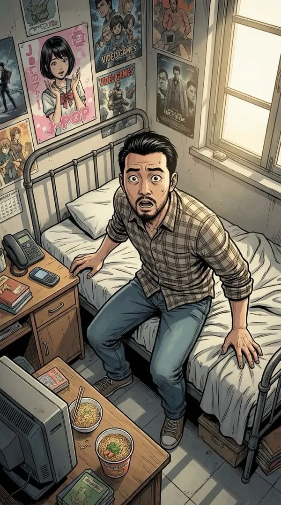
【远景 · 俯拍 · 固定】上海闵行合租房
朱江猛然坐起。
吱呀作响的铁架床。贴满海报的墙。方便面味道。诺基亚N73。
日历上的数字像一把锤子砸进脑子——
"2010年……3月15号？！"
【情绪：极度震惊 · 不可置信 · 瞳孔放大】
【中景 · 仰拍 · 固定】合租房
叮——创业之神系统已绑定宿主·朱江。
检测到宿主携带16年未来记忆，正在初始化属性面板……
一块半透明的蓝色全息面板凭空浮现在眼前，粒子光效在空中飘散。
"这什么……游戏界面？？"
【情绪：又惊又喜 · 张大嘴巴】
⚡ 决策点一：选择初始天赋
A）未来先知 — 精确记忆未来3年所有科技大事件时间线。稳健流，降低风险。
B）人心洞察 ✓ — 一眼看穿任何人的真实意图和能力值。社交流，组建团队。
C）代码之神 — 编程能力直接拉满到2026年水准。技术流，产品碾压。
🧠 朱江的选择逻辑
黑客基因让他想看懂"人这个系统"。十六年创业经验告诉他——技术不是瓶颈，人才是。未来记忆本身已经覆盖了A的部分功能。菩萨心肠——他想真正理解人，而不只是利用信息差。
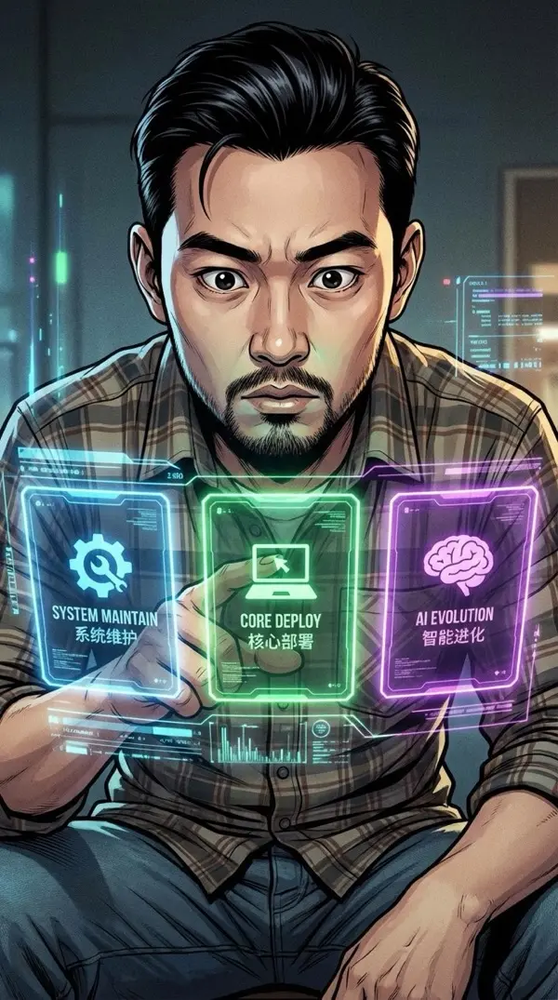
【特写 · 平拍 · 固定】面部+全息UI
三个发光的选项卡在面前悬浮。蓝色、绿色、紫色——三种光映在朱江的脸上。
代码之神？未来的代码我都会写，这个意义不大。未来先知？记忆本身就是最大的先知。但人心……
十六年来最大的教训是什么？不是技术不够强，是看不懂人心。
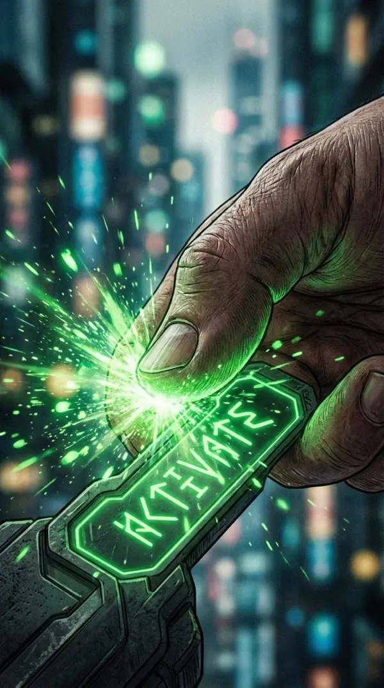
【特写 · 平拍 · 固定】手部+光效
手指坚定地触碰绿色选项——
绿色粒子从指尖爆发，扩散到整个房间。
天赋【人心洞察】已激活。宿主将获得识别他人核心属性的能力。
系统吐槽：建议选C，毕竟宿主2010年的代码水平……算了不说了。
"你才代码烂！我当年可是交大计算机系的！"
系统：是的，所以才建议选C。
【情绪：又好气又好笑】
━━ 创业之神系统 · 宿主档案 ━━
姓名：朱江 ｜ 等级：Lv.1 搬砖程序员
天赋【人心洞察】已激活
💰 资产47,832元
📱 手机诺基亚N73
🏠 住所上海闵行合租房
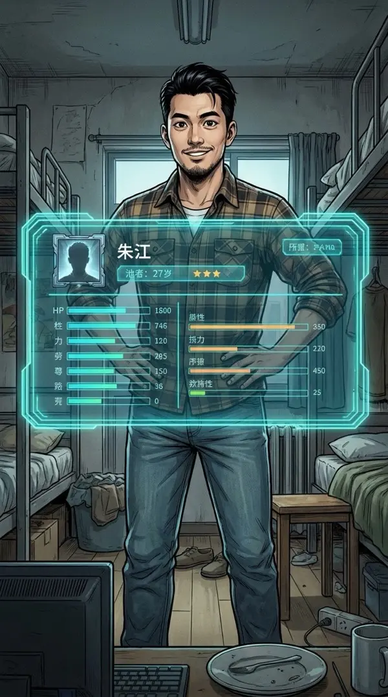
【全景 · 平拍 · 缓慢推进】合租房
朱江双手叉腰，看着面前这个荒诞又真实的游戏面板。
"商业直觉42，人脉18……"
2010年的我，确实就是这样——一个只会写代码的愣头青。
但这次不一样了。
【情绪：自信 · 嘴角上翘 · 蓄势待发】
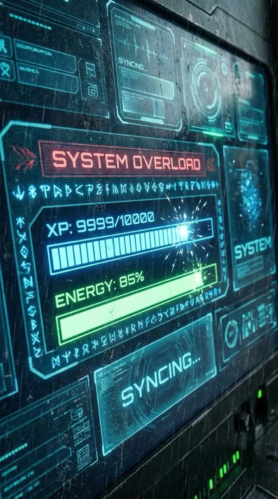
【极端特写 · 固定】属性面板UI
面板上的数值微微跳动，像是有生命一样。每一个数字都代表着他在这个世界的起跑线。
系统提示：宿主当前综合战斗力排名——全国创业者第2,847,391名。加油。
"……你这个系统是来帮忙的还是来打击人的？"
系统：客观数据不带感情色彩。但如果宿主需要，我可以加个鼓励表情：💪
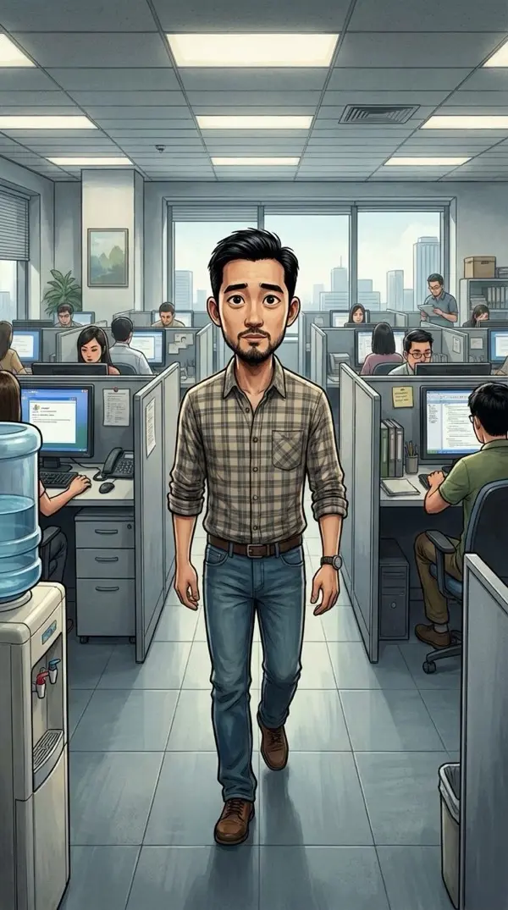
【远景 · 跟随镜头 · 缓慢横移】2010年互联网公司
第二天早上。朱江走进公司，一切都是记忆中的样子。
灰色格子间、CRT显示器、老式饮水机咕嘟咕嘟响……
十六年后再看这个办公室，竟然有一种莫名的亲切感。
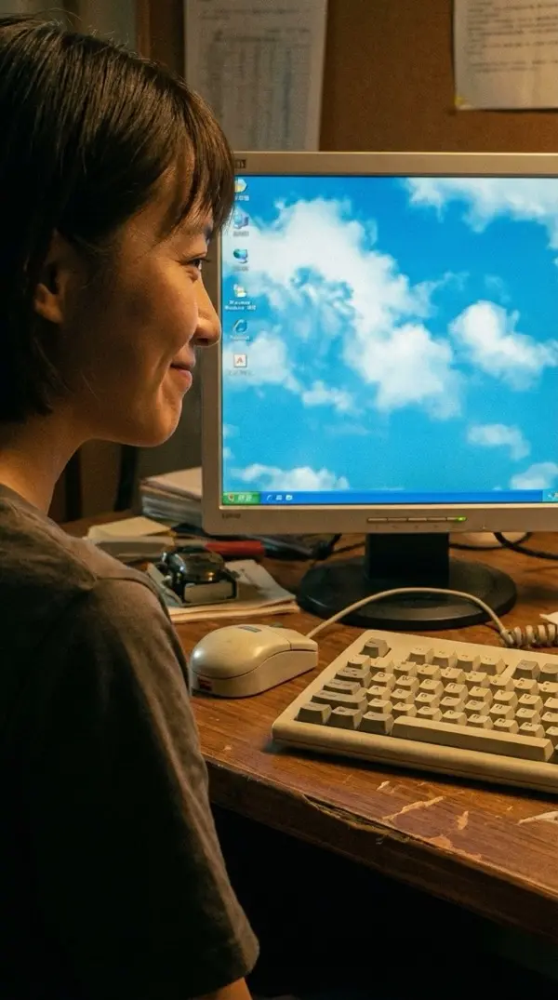
【特写 · 过肩镜头 · 固定】朱江工位
打开电脑，经典的蓝天白云桌面缓缓出现。
朱江差点笑出声。
Windows XP……我的青春啊。2026年的系统要是有你一半稳定就好了。
系统冷不丁插嘴：宿主现在的心情，和你2026年看到Windows 95的反应一模一样。
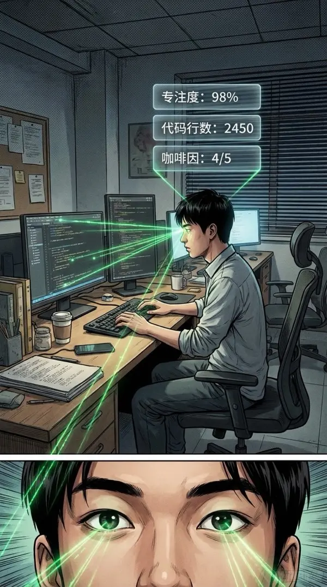
【中景 · 朱江主观视角 · 浅景深】工位区
【人心洞察】自动激活——
看向隔壁工位的李工，他头顶浮现一串半透明数据：
李工（前端）：忠诚度85 / 能力62 / 野心30
隐藏属性：有一个改变行业的idea但不敢说
有意思……老李这家伙，原来一直藏着个好点子。
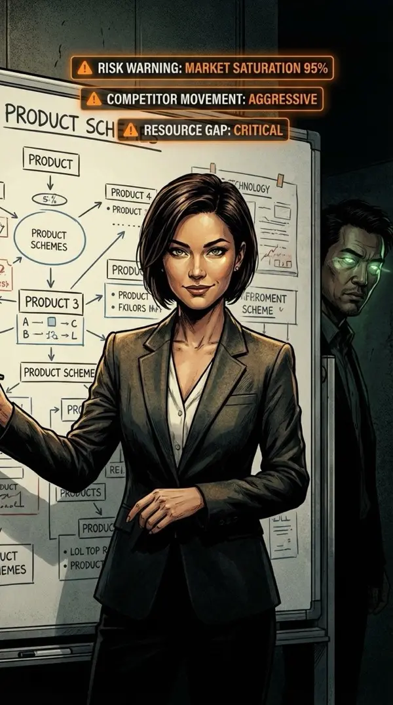
【中景 · 侧拍 · 固定】会议室
目光转向正在讲产品方案的王姐——
王姐（产品）：忠诚度45 / 能力78 / 野心90
⚠ 隐藏属性：3个月后跳槽去腾讯
怪不得当年她突然离职，原来早就在物色下家了。
能力78，确实是个人才。可惜留不住。
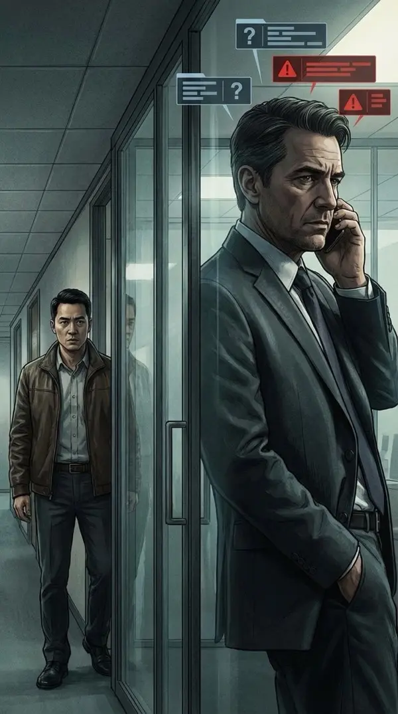
【中景 · 仰拍 · 固定】老板办公室外
最后看向玻璃办公室里打电话的张总——
张总（老板）：忠诚度?? / 能力55 / 野心99
🔴 隐藏属性：正在和投资人密谈卖公司
【情绪：凝重 · 瞳孔微缩】
【面部大特写 · 平拍 · 固定】
好家伙……原来当年公司是这么散的。
老板要卖公司，产品骨干要跳槽，前端藏着idea不敢说——
而我当时什么都不知道，每天傻乎乎996。
系统温馨提示：检测到宿主正在摸鱼看同事属性，已自动帮您打开IDE假装在写代码。请注意职业素养。
"……你还挺贴心。"
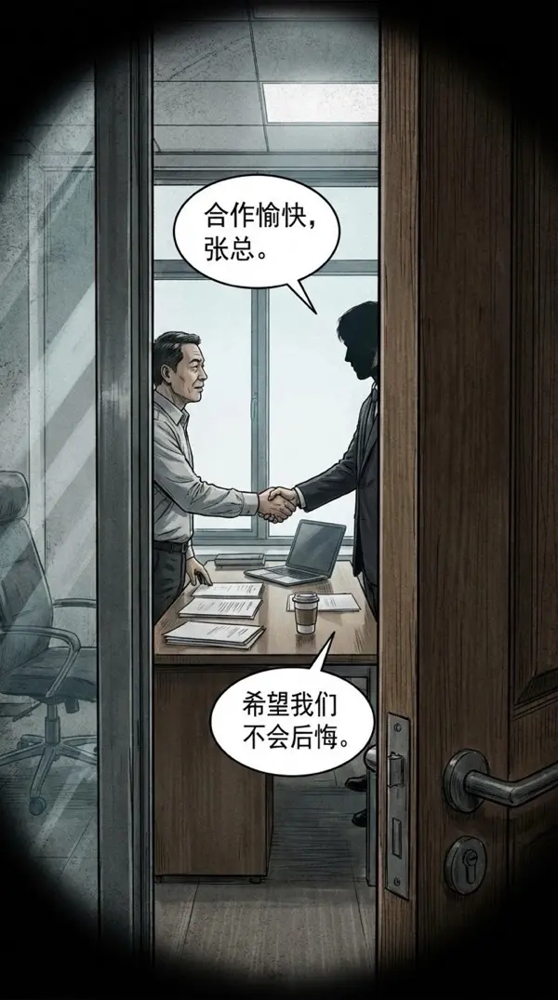
【远景 · 偷窥视角 · 门缝构图】老板办公室
午休时间，朱江"路过"老板办公室。
透过半掩的百叶窗，清楚地看到——张总在和一个西装笔挺的陌生男人握手。桌上摊着厚厚的合同文件。
来了。收购谈判。
历史上这笔交易三个月后完成，普通员工一分钱没拿到。
⚡ 决策点二：老板要卖公司
A）提前辞职 — 拿着5万块直接开始创业，快刀斩乱麻。
B）找老板摊牌 ✓ — 要求参与谈判，争取所有员工的利益。
C）暗度陈仓 — 假装不知道，偷偷挖人组建自己的团队。
D）买入股权 — 利用信息差，赚第一桶金。
🧠 朱江的选择逻辑
菩萨心肠——不可能眼看同事被坑而不说。霹雳手段——直接摊牌而非偷偷摸摸。不会选D——不是靠信息差投机的人，是创造者。选A太草率，选C太阴——都不是朱江的风格。
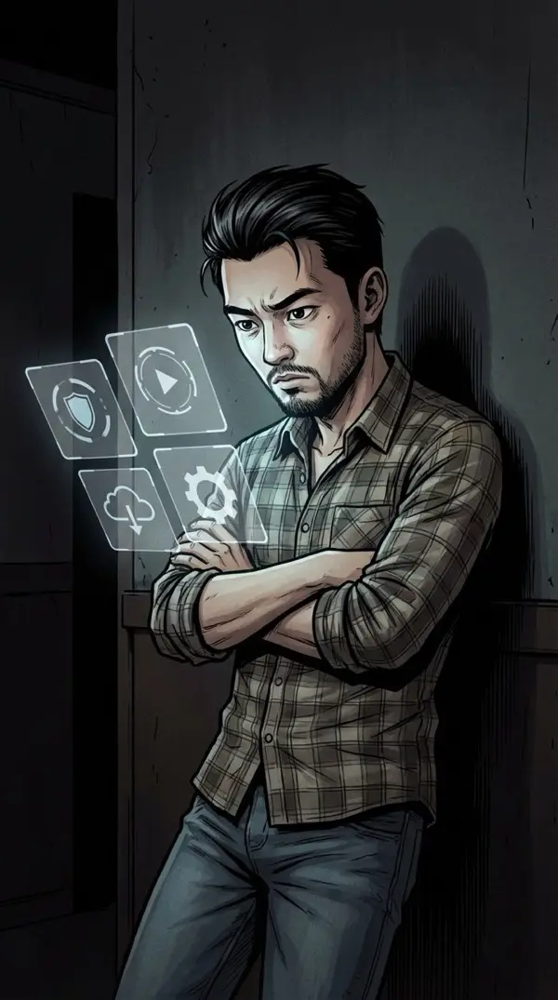
【中景 · 荷兰角 · 固定】茶水间
茶水间里，朱江靠着墙，双臂抱胸。
支线任务触发：利用信息差炒股赚100万。
奖励：商业直觉+10
"不做。"
系统：……宿主你确定吗？这是白给的钱。
"确定。我靠本事赚钱。"
系统：记录宿主选择：放弃白嫖。道德值+5，智商评估-10。
"你说什么？！"
系统：没什么。
【中景 · 低角度仰拍 · 固定】老板办公室门口
深吸一口气。
朱江推开了老板办公室的门。逆光中，他的身影坚毅而果决。
菩萨心肠，霹雳手段。该出手时就出手。
【情绪：下定决心 · 眼神锐利】
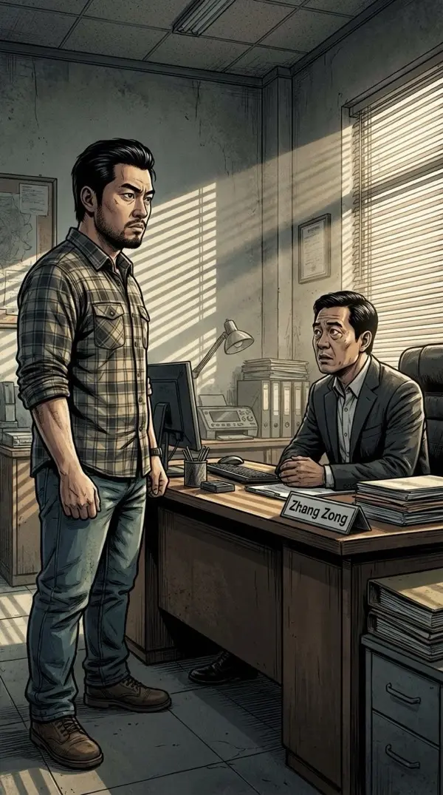
【双人中景 · 对称构图 · 固定】老板办公室
"张总，我知道您在谈收购。"
张总的表情从惊讶到震怒到沉默，最后变成了一种复杂的凝视。
"……你怎么知道的？"
"不重要。重要的是——兄弟们跟您干了三年，总不能什么都不给吧？"
百叶窗的光影打在两个人脸上，一条一条，像是天平的刻度。
【情绪：紧张对峙 · 但朱江内心平静】
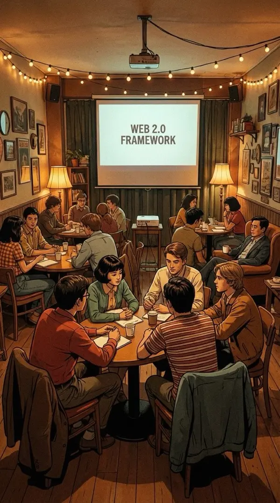
【全景 · 平拍 · 缓慢横摇】咖啡馆
周末，一场小型技术沙龙。2010年的技术圈还很纯粹——十几个年轻人挤在一间咖啡馆里，聊的都是梦想。
朱江坐在角落，啜着美式咖啡，默默观察。
这里面有没有……未来的合伙人？
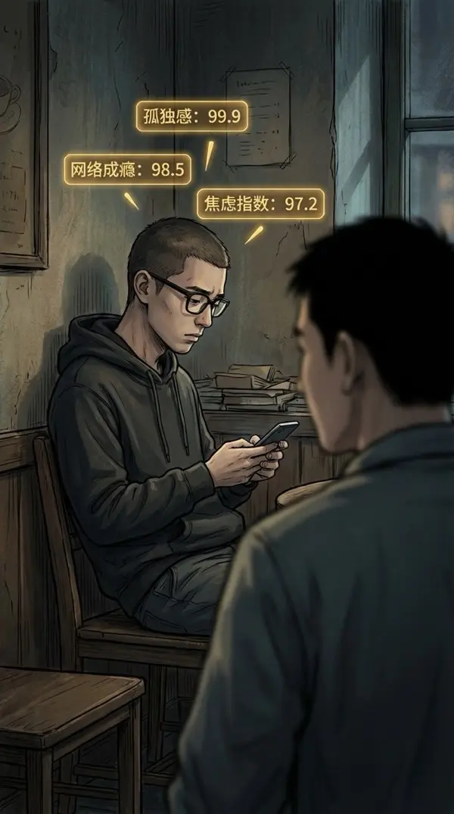
【中景 · 浅景深 · 固定】咖啡馆角落
然后他看到了一个人。
角落里，一个瘦高的年轻人独自坐着，戴黑框眼镜，低头看手机，浑身散发着"别过来"的气场。
【人心洞察】自动激活——
【情绪：瞬间锁定 · 眼睛亮了】
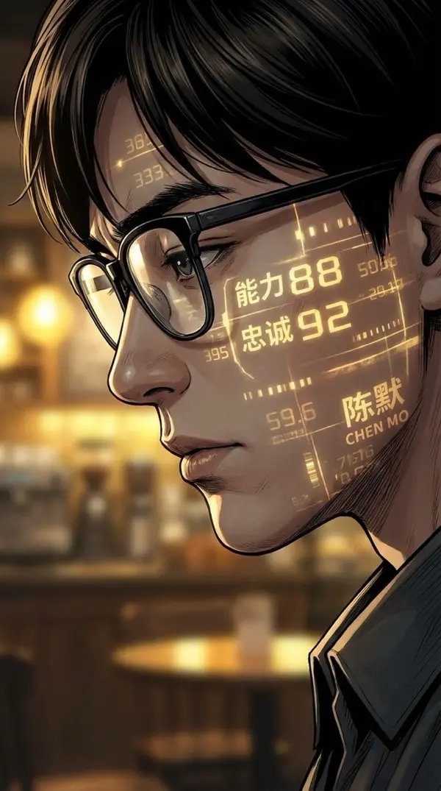
【特写 · 侧面 · 数据叠加】陈默
陈默 · 25岁
忠诚度：92 / 能力：88 / 野心：75
🌟 隐藏属性：未来独角兽CTO潜质
当前状态：迷茫，刚从大公司裸辞
缺陷：社恐严重，不擅长表达
能力88……忠诚度92……这数据简直是梦幻合伙人。
可是2010年的他，只是一个被全世界忽视的裸辞程序员。
⚡ 决策点三：如何接近陈默
A）展示远见 — 直接邀请创业，用移动互联网爆发预判来说服他。
B）先交朋友 ✓ — 帮他解决眼前困境，建立信任后再聊。
C）精准打击 — 用人心洞察找到痛点，让他无法拒绝。
🧠 朱江的选择逻辑
菩萨心肠——先帮人，不功利。创业经验——知道合伙人信任比能力更重要，急不来。不会选C——虽然能看到痛点，但操控人不是朱江的风格。黑客思维是"理解系统"而非"操控系统"。
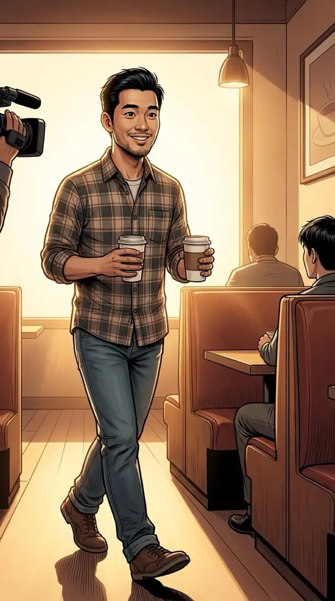
【中景 · 跟随镜头 · 缓慢推进】咖啡馆
朱江端起两杯咖啡，走向角落。
系统建议：使用【人心洞察】进行精准社交攻略。
"我交朋友不需要攻略。"
系统：提醒宿主，您2010年的人脉值只有18。
"那就从19开始涨呗。"
系统：……好的。已记录宿主选择：佛系社交。人脉经验+1。
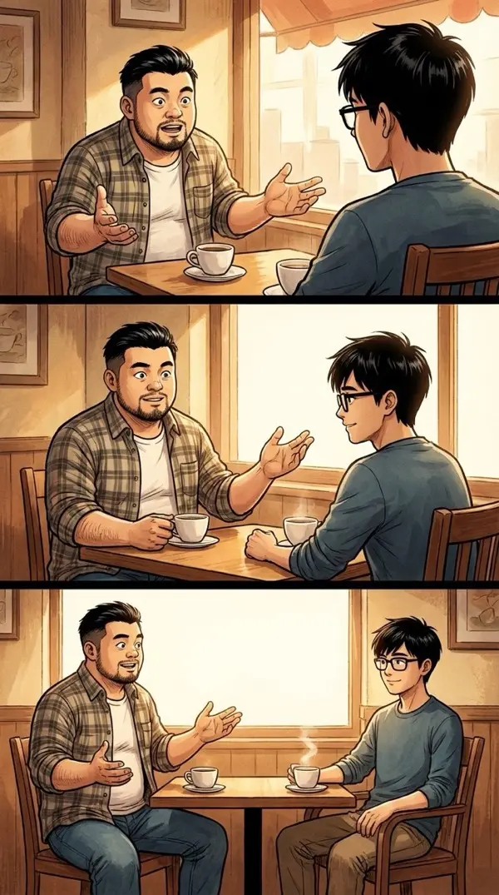
【双人中景 · 平拍 · 固定】咖啡馆角落
"你好，我叫朱江，也是程序员。看你一个人坐着，请你喝杯咖啡。"
陈默抬头，警惕地看了一眼，但还是接过了咖啡。
"……谢谢。我叫陈默。"
聊了十分钟。从技术框架聊到创业想法，从行业趋势聊到人生迷茫。
陈默的防线一点一点松下来。
【情绪：从防备→放松→微笑】
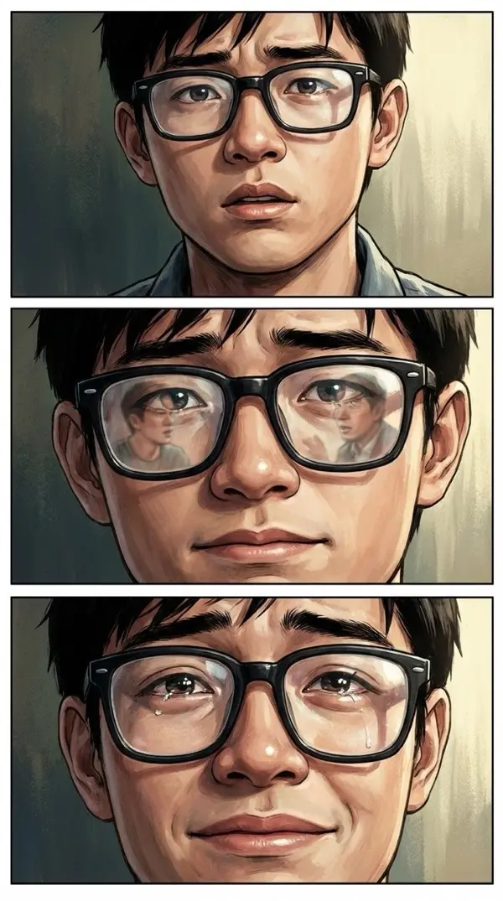
【面部特写 · 平拍 · 固定】陈默
当朱江说到"我觉得移动互联网会改变一切"的时候——
陈默的眼睛亮了。
那是一种被理解的光，一种找到同类的光。
"你……你也这么想？公司里没人相信我说的。"
（朱江）：这个人，值得等。
【情绪：感动 · 被看见的喜悦】
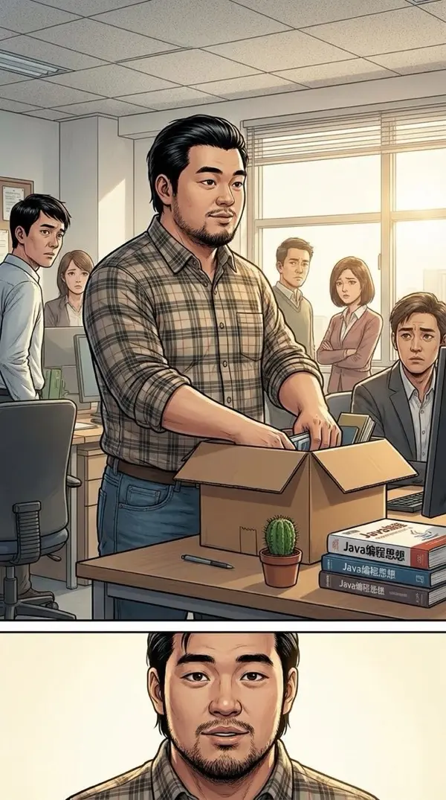
【中景 · 平拍 · 固定】办公室工位
月底。在和张总的博弈中，朱江帮核心团队争取到了不错的离职补偿。
然后他收拾了自己的工位——仙人掌盆栽、几本技术书、一张泛黄的照片。
"走了，兄弟们。后会有期。"
系统：任务完成——摊牌老板。奖励：领导力+4，人脉+3。
【情绪：轻松自在 · 卸下重担 · 蓄势待发】
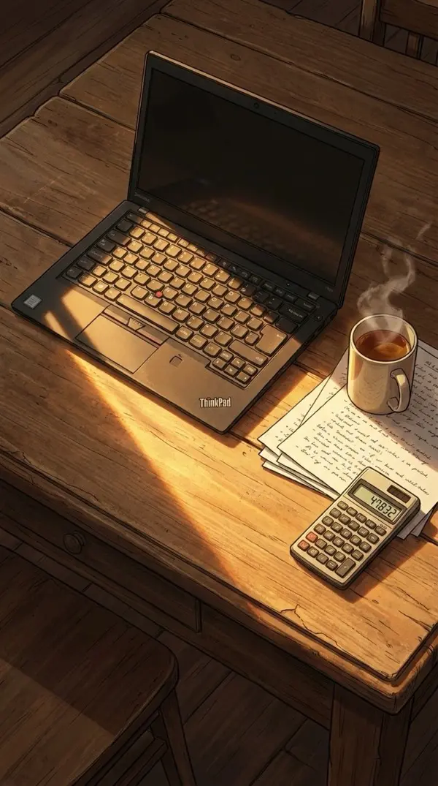
【特写 · 俯拍 · 固定】合租房书桌
全部家当：一台ThinkPad、一叠写满笔记的A4纸、计算器上显示的数字——47,832。
四万七千八百三十二块。这是我重新开始的全部筹码。
2026年的我，管着几千万的项目。2010年的我，连房租都要精打细算。
……但奇怪的是，此刻我比任何时候都兴奋。
⚡ 决策点四：选择第一个创业方向
A）团购 — 现在入场正好，知道美团模式会赢，可以抄作业。
B）移动工具App — 不追风口，做真正有用的工具，慢但壁垒高。
C）移动社交 — 2010年还是空白市场，虽然微信会出来，但细分赛道有机会。
D）内容平台 ✓ — 短视频/内容分发，现在太早但可以先做图文版，积累生态。
🧠 朱江的选择逻辑
内容是朱江骨子里的方向——终极使命就是"AIGC娱乐内容平台"。不会选A——抄作业不是创造者的风格。B太无聊——朱江是有野心的人。黑客思维：4G没有？先做图文版，等基础设施到了再升级。
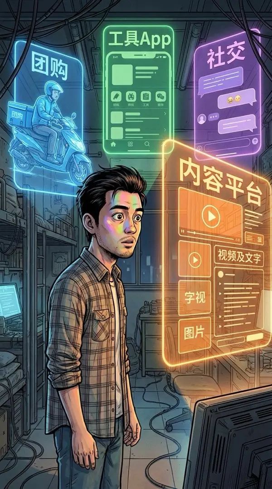
【全景 · 平拍 · 固定】合租房，科幻感
四个巨大的全息投影在合租房里旋转。团购、工具、社交、内容——四条截然不同的路。
我知道团购最赚快钱。我知道工具最稳。我知道社交最大。
但……
目光不由自主地锁定在"内容平台"的全息投影上。
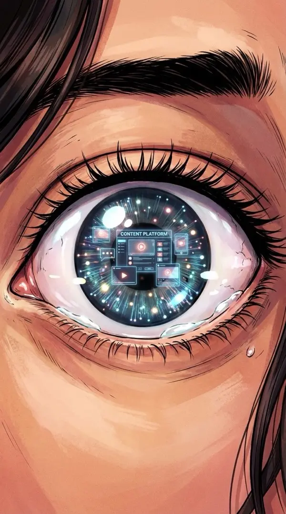
【极端特写 · 平拍 · 固定】朱江瞳孔
系统分析完毕：以宿主当前资产47,832元入场团购赛道，预计存活时间——17天。
"……那做内容呢？"
系统：预计存活时间——16天。但会死得更有尊严。
"我选D。"
系统：已记录。顺便说一句——宿主查看团购分析时，眼睛完全没亮。看到内容平台时瞳孔放大了0.3毫米。
所以您的选择，系统早就知道了。
【中景 · 低角度仰拍 · 固定】合租房
手触碰到"内容平台"的全息选项的瞬间——金色光芒爆发。
其他三个选项渐渐暗淡、消散。
内容。永远是内容。
无论2010年还是2026年，我的答案从来没变过。
【情绪：坚定 · 兴奋 · 使命感】
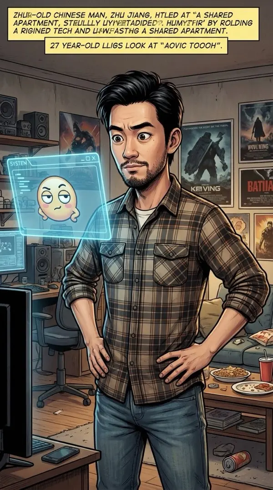
【中景 · 平拍 · 固定】合租房
"行了行了，别在那幸灾乐祸了。"
系统：谁幸灾乐祸了？我这是在为宿主的浪漫主义创业精神鼓掌。
系统：👏👏👏（此处掌声由系统自动生成，不代表真实情感）
"……你这个破系统，嘴是真的毒。"
系统：感谢宿主好评。毒舌系统，为您服务。
【情绪：又好气又好笑 · 但心情很好】
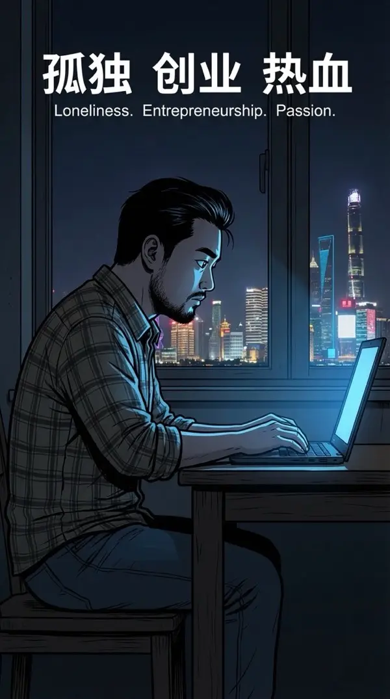
【中景 · 侧面剪影 · 固定】合租房深夜
深夜。上海闵行的出租屋里，只有ThinkPad屏幕的光。
朱江的手指在键盘上飞快跳动。一行一行代码，构建着一个还不存在的世界。
十六年前，我也是这样开始的。
不，不一样。这一次，我知道终点在哪里。
这一次，我不会走弯路。
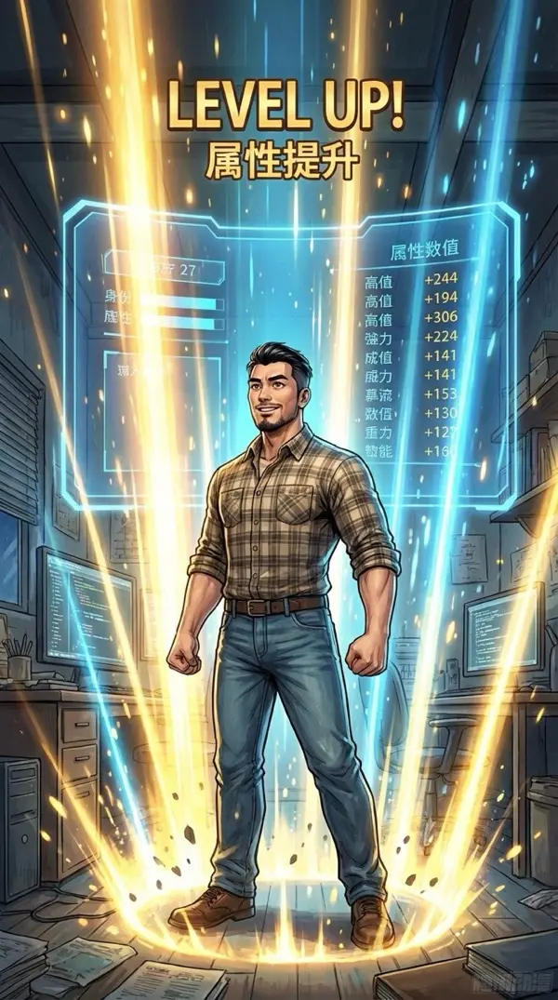
【全景 · 平拍 · 华丽特效】合租房
🎊 第一章任务全部完成！
决策评分：S级（4/4最优解）
获得经验：+200
等级提升：Lv.1 搬砖程序员 → Lv.2 草根创业者
金色和蓝色的光柱从地板升起，粒子特效在空中飘散。
朱江仰头微笑，被光芒笼罩。
系统：恭喜宿主从"搬砖程序员"升级为"草根创业者"。虽然听起来没什么区别，但至少title变了。
━━ 创业之神系统 · 等级提升！━━
等级：Lv.2 草根创业者 ⬆
💰 资产42,100元 (-5,732)
🏠 住所朝南小单间 ⬆
👥 队伍陈默（未正式入伙）
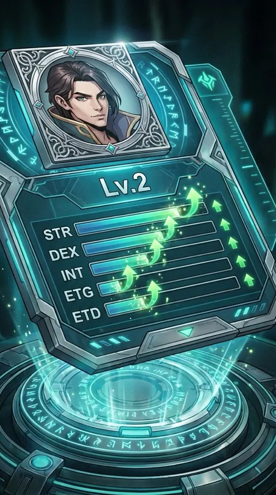
【特写 · 固定】升级后属性面板
面板上的数值闪着金色的增长箭头。虽然每个属性只涨了几个点，但这是真实的成长。
从18到25的人脉值，只是因为真诚地交了一个朋友。
这就够了。
【双人中景 · 背影 · 固定】天台
天台。夕阳把整个上海染成金色。
朱江和陈默并肩站着，眺望远方的城市天际线。
"陈默，你相信移动互联网会改变一切吗？"
"……以前不太信。但你刚才说的那些，让我觉得好像真的会。"
"那——愿不愿意一起试试？"
陈默沉默了很久。然后轻轻点了点头。
【情绪：温暖 · 夕阳余晖 · 梦开始的地方】
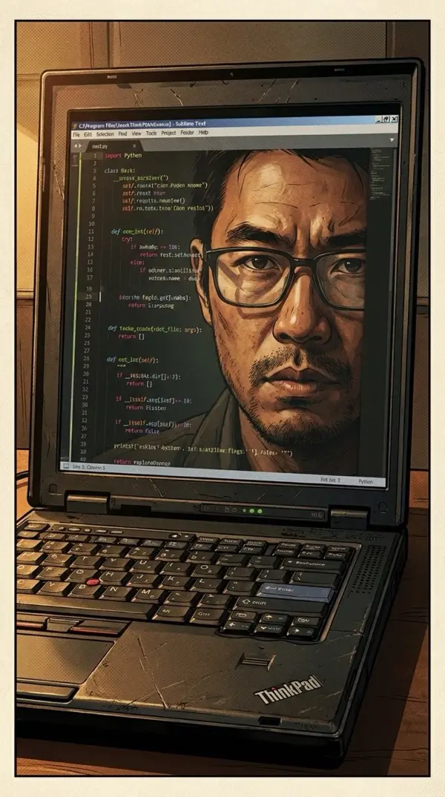
【极端特写 · 固定】ThinkPad屏幕
光标在黑色的代码编辑器上闪烁。
朱江敲下了第一行代码——这是一个内容平台的第一个字符。
2010年。内容平台。5万块钱。一个社恐的合伙人。一个毒舌的系统。
就这么开始吧。
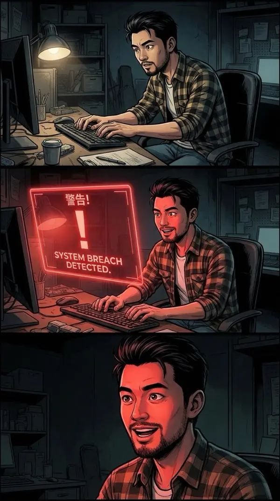
【中景 · 平拍 · 固定】合租房深夜
就在朱江沉浸在代码中的时候——
系统面板突然亮起刺眼的红色警告。
⚠ 紧急警报：检测到异常穿越信号。
距离宿主当前位置：3.2公里。
信号特征：与宿主穿越方式高度相似。
朱江盯着屏幕，嘴角缓缓上翘。
"有意思。"
📖 下一章预告
宿主将遭遇第一个真正的对手——
一个同样从未来穿越回来的人。
而且，他选择的是A选项。
他已经开始了团购大战。
"有意思。"
— 重启·创业之神 · 第一章 完 —
EXP-548 · Trinity V3